By Omónimo Design House
(2026)©
VC Arquitectura®
Brand guidelines
VC Arquitectura®
Brand Guidelines
Introducción
Este manual documenta los elementos que conforman la identidad visual de VC Arquitectura® y el criterio con el que deben aplicarse.
Omónimo Design House
Medellín / Colombia -(2026)©

VC Arquitectura®
Brand Guidelines
Core Values
VC Arquitectura®
Brand Guidelines
ADN
Un estudio de arquitectura enfocado en el bienestar y el equilibrio.
¿QuiÉnes somos?
Arquitectura, interiorismo y construcción para casas, clínicas y oficinas.
¿Qué hacemos?
Preguntando primero cómo se va a sentir el cuerpo de quien entre.
¿Cómo lo hacemos?
Porque cada persona tiene una manera única de habitar el mundo. Encontrarla y construirla es nuestro trabajo.
¿Por qué?
VC Arquitectura®
Brand Guidelines
Nuestra Misión
Encontrar la manera en que cada persona habita y hacerla un espacio.
ENTRE EL CUERPO Y EL ESPACIO
VC Arquitectura®
Brand Guidelines
Pilares de marca
LUZ
La luz decide si el cuerpo descansa o se queda en alerta. Se diseña antes que cualquier cosa.
MOVIMIENTO
Circulaciones anchas y ambientes que se continúan. Recorrer la casa no le debería pedir esfuerzo al cuerpo.
MATERIA
Madera, piedra, barro y fibras naturales. La piel reconoce una textura cálida y natural, esto también es bienestar.
ENTORNO
Ventanales de piso a techo y terrazas que se sienten parte de la sala. Buscamos una relación de armonía entre el espacio y su entorno.
VC Arquitectura®
Brand Guidelines
Personalidad
Sensibles
Vemos el mundo con otros ojos; somos capaces de apreciar cosas que los demás no ven en primera instancia.
Serenos
Trabajamos sin afán. Una decisión de obra se toma cuando hay información suficiente, aunque eso mueva el cronograma.
Precisos
Cada línea del plano tiene una razón y la sabemos explicar. Lo que no cumple una función sale del proyecto.
Atemporales
Diseñamos para que el espacio siga funcionando en veinte años, cuando la tendencia de hoy ya se haya ido.
VC Arquitectura®
Brand Guidelines
Nuestra voz
UNA VOZ QUE SE TOMA SU TIEMPO.
Hablamos claro, lento y pausado.
Nombramos lo que el cuerpo percibe: la temperatura, la luz y el material.
Nuestro lenguaje es el español. El inglés entra solo cuando el término técnico no tiene un equivalente mejor.
Cuando presentamos un proyecto empezamos por quien lo va a habitar: cómo se mueve en la mañana, dónde se sienta a leer.
Palabras como lujo, exclusivo o de autor quedan por fuera. Si un material vale la pena, se dice por qué: el roble del piso se escogió porque no se enfría de noche.
Citamos un arquitecto o una obra solo cuando le ayuda al cliente a entender una decisión.
Observar.
Equilibrar.
Construir.
Habitar.
VC Arquitectura®
Brand Guidelines
Logotipo
Estandard
VC Arquitectura®
Brand Guidelines
Logotipo
Con Descriptor
Esta versión le da al receptor más contexto sobre quiénes somos. Se usa cuando la pieza no lo explica por sí sola, o cuando ese contexto necesita reforzarse.
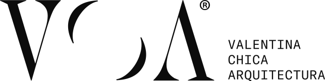
VC Arquitectura®
Brand Guidelines
Logotipo
Clear Space
El logo de VC Arquitectura es ligero y se sostiene en trazos finos, así que necesita aire alrededor. Le damos un margen que ningún otro elemento (texto, imagen, borde) puede invadir. Ese espacio protege su legibilidad.
Se calcula dejando un margen vacío equivalente al 50% de su altura.
Clear Space: 50% de la altura del logo a cada lado
50%
50%
50%
50%
VC Arquitectura®
Brand Guidelines
Logotipo
Orientación
CORRECTO
INCORRECTO
Horizontal
Esta es nuestra orientación por defecto.
Vertical
Gracias al ambigrama, el logo se lee igual girado 90° hacia cualquier lado. Úsalo así en lomos, bordes y piezas angostas.
Espejado
Reflejar el logo rompe el ambigrama: las letras quedan al revés y deja de leerse VCA.

VC Arquitectura®
Brand Guidelines
Logotipo
Tamaños Permitidos
Tamaño mínimo
Tamaño mÁXIMO
Por debajo de este tamaño, el anillo del ® —el trazo más delgado de toda la pieza— empieza a cerrarse y pierde su forma.
— Mínimo impresión: 10 mm
— Mínimo digital: 32 px
No tiene límite superior. Está construido para sostenerse a cualquier escala sin perder proporción ni presencia, de una tarjeta a una fachada. La única condición es respetar siempre su clear space.
VC Arquitectura®
Brand Guidelines
Logotipo
Ejemplos de aplicación
El logotipo es la firma principal de VC Arquitectura: la forma en que el nombre se escribe cuando hay espacio para hacerlo con claridad.
Va en papelería, señalética, web, publicidad y cualquier pieza donde el logotipo sea protagonista. El símbolo ® acompaña la firma en la mayoría de los casos, si el espacio es reducido podemos omitirlo.
Comunicación Corporativa
Camiseta
Lockscreen
Sobre
Tarjeta Personal
Regalo corporativo
ID
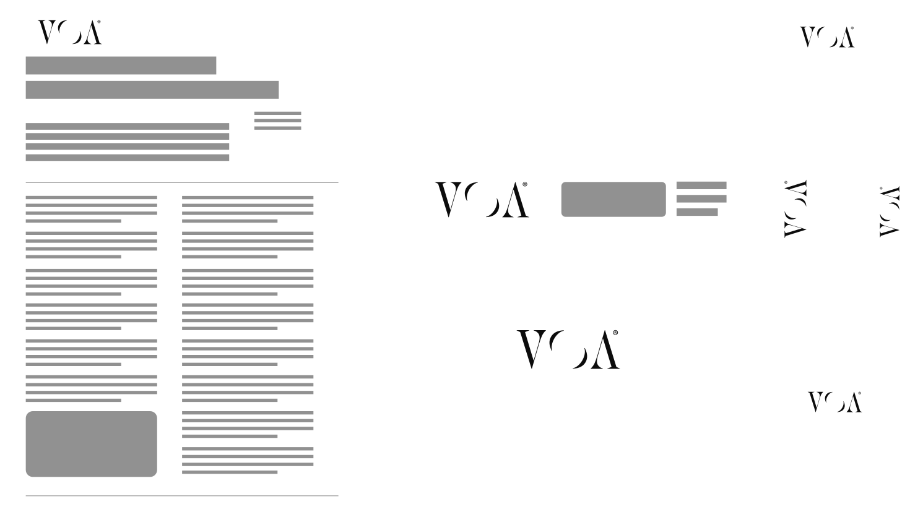
VC Arquitectura®
Brand Guidelines
Logotipo
Usos Incorrectos
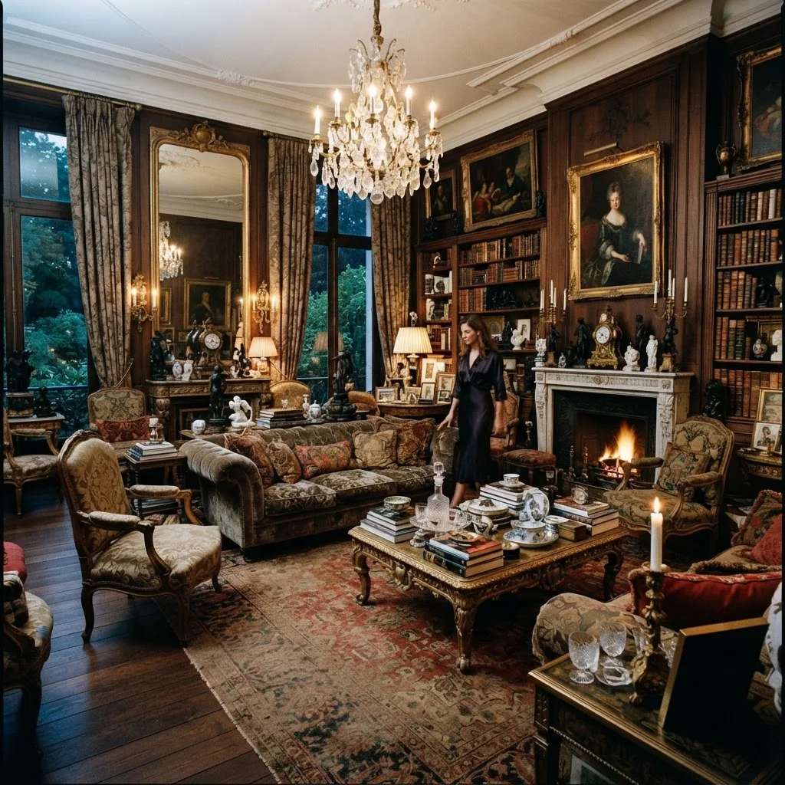
Usar a escala muy pequeña
Poco contraste
Imágenes muy pesadas
Rotar 45°
Distorsionar
Cambiar color
Incorrecto
Por debajo del tamaño mínimo, los detalles se pierden y el logo deja de leerse con claridad.
Correcto
Respetar siempre el tamaño mínimo. Si el espacio no alcanza, se cambia el formato de la pieza.
Incorrecto
Sobre fondos de tono similar, el logo pierde presencia y legibilidad.
Correcto
Ubicarlo siempre sobre un fondo con contraste suficiente.
Incorrecto
El logo nunca gira en un ángulo distinto a 90°.
Correcto
Siempre en posición horizontal o vertical (ver página de orientación).
Incorrecto
Sobre fotografías cargadas de elementos, el logo compite y se diluye.
Correcto
Colocarlo en una zona limpia de la imagen o sobre un fondo sólido.
Incorrecto
Estirar o comprimir el logo altera sus proporciones y su carácter.
Correcto
Escalar siempre de forma proporcional, nunca solo en ancho o solo en alto.
Incorrecto
El logo no se adapta a colores fuera de la paleta de marca.
Correcto
Usar únicamente los colores oficiales definidos en este manual.
Errores frecuentes que comprometen la legibilidad y el reconocimiento del logo.
La C del logo abre un espacio en el centro. Ese espacio se llena según dónde aparezca la marca: en la papelería lleva la web y en la fachada, la dirección. Cuando se presenta una obra, lleva su nombre.
VC Arquitectura®
Brand Guidelines
Marca Viva
VC Arquitectura®
Brand Guidelines
Marca viva
Web
Para papelería y firmas de correo, donde lo siguiente que hace quien la recibe es buscar la web.


vcarquitectura.com
VC Arquitectura®
Brand Guidelines
Marca viva
Ubicación
Para la vitrina y la señalética del estudio. El centro dice dónde encontrarlo.


Complex local 204
VC Arquitectura®
Brand Guidelines
Marca viva
Proyectos
Casa M10
Casa El 3
Casa M03
Cada obra recibe su propia versión, con el nombre de la casa en el centro. Se usa en la valla de obra y en todo lo que se publique sobre ese proyecto.
VC Arquitectura®
Brand Guidelines
Color
VC Arquitectura®
Brand Guidelines
Color
Paleta Principal
Grafito (Materiales)
Digital:
#0C0C0C
Impreso:
C:86 M:76 Y:46 K:100
Resplandor (Luz)
Digital:
#E6DBB9
Impreso:
C:13 M:13 Y:33 K:0
Paisaje (Entorno)
Digital:
#B2BCA2
Impreso:
C:36 M:18 Y:40 K:3
Vital (Movimiento)
Digital:
#E9E5DA
Impreso:
C:11 M:9 Y:16 K:0
VC Arquitectura®
Brand Guidelines
Color
Armonías de Color
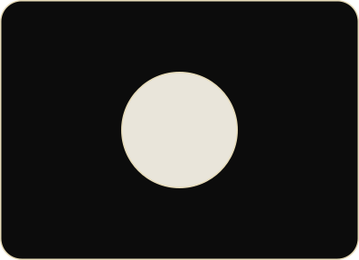
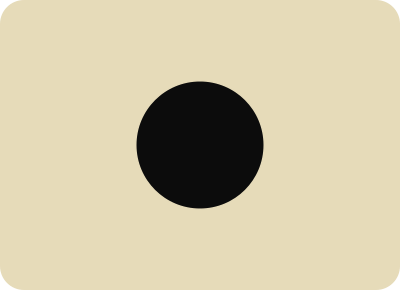
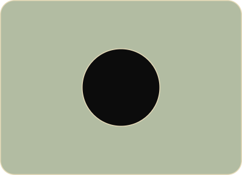
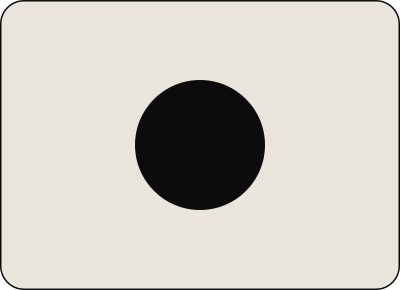
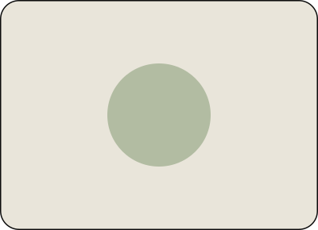
Cada color de fondo tiene un acento que le sienta bien: uno claro, que abre espacio, y uno oscuro, que da profundidad. Estas son las combinaciones ya probadas — el punto de partida antes de armar una pieza nueva.
VC Arquitectura®
Brand Guidelines
Color
Colorización de foto y video
Especificaciones Técnicas
Luz natural y cálida, entre 4000 y 4500K, que entra de lado por una ventana o una claraboya. Contraste bajo y sombras con detalle. Saturación reducida entre 15–20%, para que la piedra y la madera se acerquen a “Resplandor y Vital”, y la vegetación a “Paisaje”. Si aparece una persona, va en movimiento con barrido de cámara (1/8 a 1/15 de segundo) y el espacio sigue siendo el protagonista.

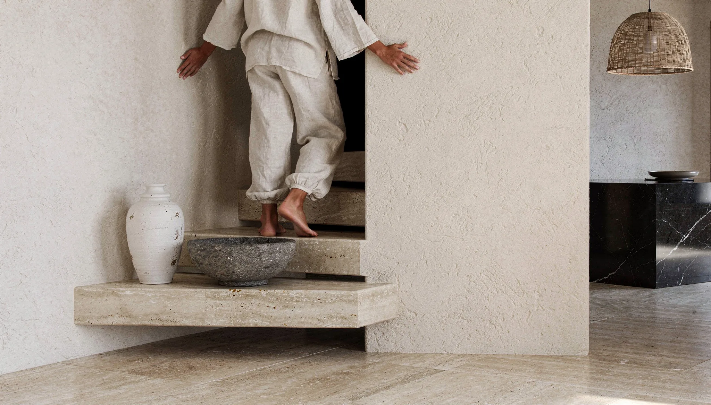
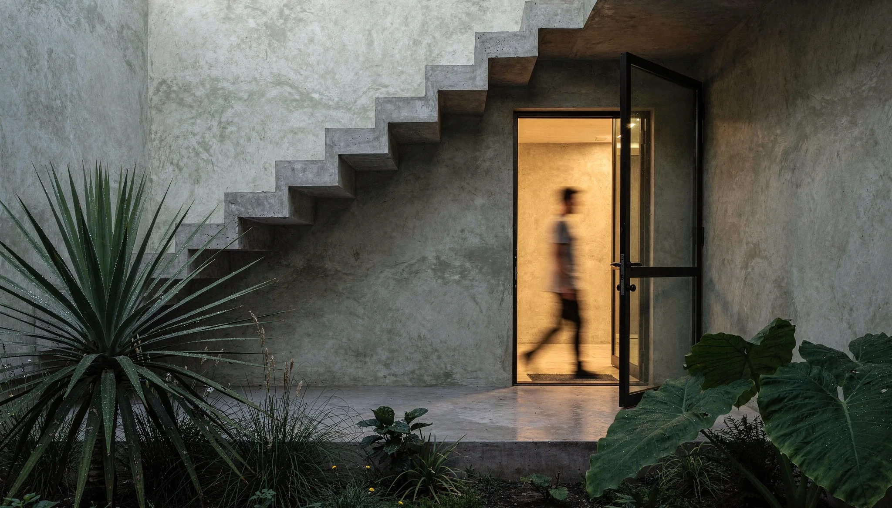
Un mismo lugar puede sentirse completamente distinto según el tratamiento de color que reciba. Estas son las reglas que hacen que cualquier pieza visual se reconozca como parte de la marca.
VC Arquitectura®
Brand Guidelines
Color
Usos Incorrectos
El color también tiene sus límites: estas son las combinaciones y aplicaciones que rompen la identidad de la marca.

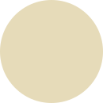
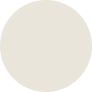
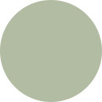
Armonia de color equivocada
Poco Contraste
Colores fuera de paleta
Incorrecto
Combinar colores de la paleta sin seguir las armonías ya definidas rompe la coherencia visual de la marca.
Correcto
Usar únicamente las combinaciones validadas en la sección de Armonías de Color.
Incorrecto
Cuando el acento y el fondo tienen valores muy similares, el color pierde su función y se vuelve invisible.
Correcto
Elegir combinaciones con contraste suficiente para que el acento se distinga con claridad.
Incorrecto
Reemplazar Vital por blanco puro o Paisaje por un verde más saturado.
Correcto
Usar siempre los valores exactos de la paleta, en digital y en impreso.
Incorrecto
Un color sólido puesto directamente sobre una fotografía compite con la imagen y pierde su propia identidad.
Correcto
Aplicar el color sobre áreas limpias de la imagen, o dejar que la fotografía hable sola.
VC Arquitectura®
Brand Guidelines
Tipografía
Títulos
A
A
AaBbCcDd
EeFfGgHhIiJj
KkLlMmNnÑ
ñOoPpQqRr
SsTtUuVvwXx
YyZz1345
67890!&@$
%()*®
Familia: Google Sans Flex
Peso: Thin
Caja: Alta
Margen de espaciado entre letras: -25 / +25
Altura entre líneas: Igual o hasta 4 puntos más que el puntaje de la tipografía.
VC Arquitectura®
Brand Guidelines
Tipografía
Subtítulos
A
A
Familia: Google Sans Flex
Peso: Medium
Caja: Alta
Margen de espaciado entre letras: +100 / +200
Altura entre líneas: Igual o hasta 4 puntos más que el puntaje de la tipografía.
GOOGLE SANS FLEX
VC Arquitectura®
Brand Guidelines
Tipografía
Texto Corrido
A
A
Creemos que habitar no es ocupar un espacio. Es sentirlo. Es que la luz llegue donde el cuerpo busca calma. Que los materiales cedan al tacto. Que la circulación fluya sin que nadie lo note. Que el exterior entre, no invada. Eso no se improvisa.
Creemos que habitar no es ocupar un espacio. Es sentirlo. Es que la luz llegue donde el cuerpo busca calma. Que los materiales cedan al tacto. Que la circulación fluya sin que nadie lo note. Que el exterior entre, no invada. Eso no se improvisa.
Familia: Google Sans Flex
Peso: Regular
Caja: Tipo Oración
Margen de espaciado entre letras: -25 / +25
Altura entre líneas: Igual o hasta 4 puntos más que el puntaje de la tipografía.
VC Arquitectura®
Brand Guidelines
Tipografía
Jerarquía Visual
Título:
Google Sans Flex Thin
110 pt
Subtítulo
Google Sans Flex Medium
24 pt
Texto corrido
Google Sans Flex Regular
14 pt
Encontramos el espacio correcto.
ENTRE EL CUERPO Y EL ESPACIO
Antes de dibujar el primer plano, Valentina pregunta cómo se mueve cada persona dentro de su casa: a qué hora entra la luz al cuarto y cuántos pasos hay entre la cocina y la mesa. Con esas respuestas se ubican las ventanas y se decide el ancho de cada pasillo.
El resultado se nota al entrar. La piedra del baño está tibia en la mañana, la sala recibe sol de lado después del almuerzo y nadie tiene que pensar por dónde caminar. VC Arquitectura trabaja con ese criterio desde el primer boceto hasta la entrega de llaves.
Cada nivel de texto cumple una función distinta: el título capta la atención, el subtítulo la sostiene, y el cuerpo de texto explica. Tres tamaños, tres pesos, un mismo sistema — así se lee una pieza de un vistazo, sin perderse en ella.
VC Arquitectura®
Brand Guidelines
Tipografía
Usos Incorrectos
Estos son los errores más frecuentes al aplicar la tipografía de la marca, y por qué comprometen su lectura.
Composiciones sin jerarquía visual o que se salgan de los lineamientos para cada tipo de texto.
Texto ilegible
Mala partición de palabras
Sustituir por una tipografía similar
Alterar el tracking e interletrado fuera del margen permitido
Aplicar efectos no autorizados

ARQUITECT
URA E
INTERIORI
SMO
ARQUITECTURA E INTERIORISMO
VC ARQUITECTURA
Medellín Colombia
ARQUITECTURA E INTERIORISMO
ARQUITECTURA E INTERIORISMO
ARQUITECTURA E INTERIORISMO
ARQUITECTURA E
INTERIORISMO
Incorrecto
Cortar una palabra a la mitad entre líneas dificulta la lectura y se ve descuidado.
Correcto
Partir siempre por palabra completa, nunca a mitad de una.
Incorrecto
Dar el mismo peso a título, nombre y ubicación elimina la jerarquía y confunde la lectura.
Correcto
Respetar los tres niveles definidos —título, subtítulo, texto corrido— y su diferencia de peso.
Incorrecto
Reducir el texto por debajo de un tamaño legible vuelve la información inutilizable.
Correcto
Respetar el tamaño mínimo de lectura en cada aplicación.
Incorrecto
Usar una tipografía "parecida" cuando la oficial no está disponible diluye el carácter de la marca.
Correcto
Usar siempre la tipografía oficial: Google Sans Flex.
Incorrecto
Forzar el espaciado entre letras más allá de lo definido rompe el ritmo del texto.
Correcto
Mantener el tracking dentro de los valores definidos para cada nivel tipográfico.
Incorrecto
Sombras, contornos o cualquier efecto decorativo no pertenecen al sistema tipográfico de la marca.
Correcto
Usar el texto siempre plano, sin efectos añadidos.
Texturas, ilustraciones, efectos: piezas sueltas que, aplicadas con criterio, le dan profundidad y carácter a cualquier comunicación de la marca
VC Arquitectura®
Brand Guidelines
Recursos Gráficos
VC Arquitectura®
Brand Guidelines
Recursos Gráficos
Texturas

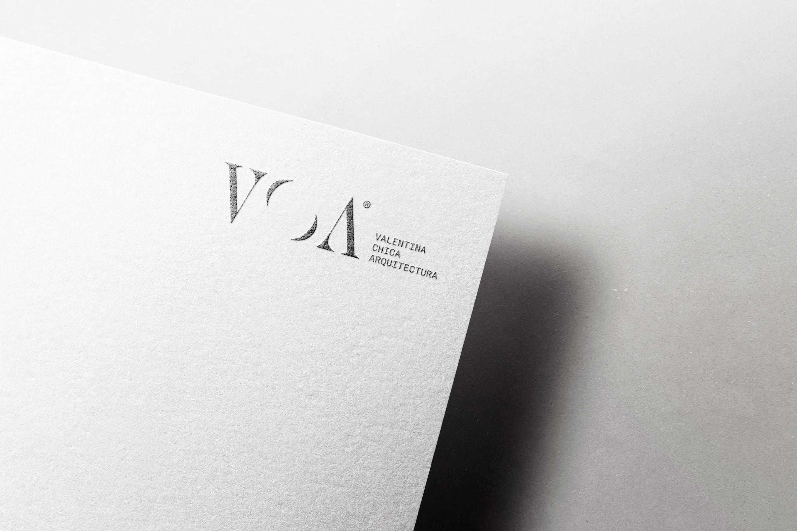

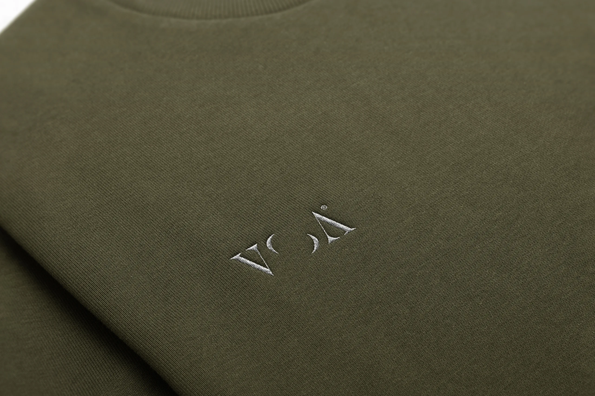
Las texturas dan profundidad táctil a los fondos: la marca de un papel, el tejido fino de una tela. Sostienen el color y la tipografía sin llamar la atención sobre sí mismas.
Se aplican como capa de fondo, a baja intensidad y en un solo tono por pieza — nunca combinando varias texturas entre sí, y nunca con tanta fuerza que empiecen a competir con el texto que llevan encima.
VC Arquitectura®
Brand Guidelines
Recursos Gráficos
Logo en Alto y Bajo Relieve
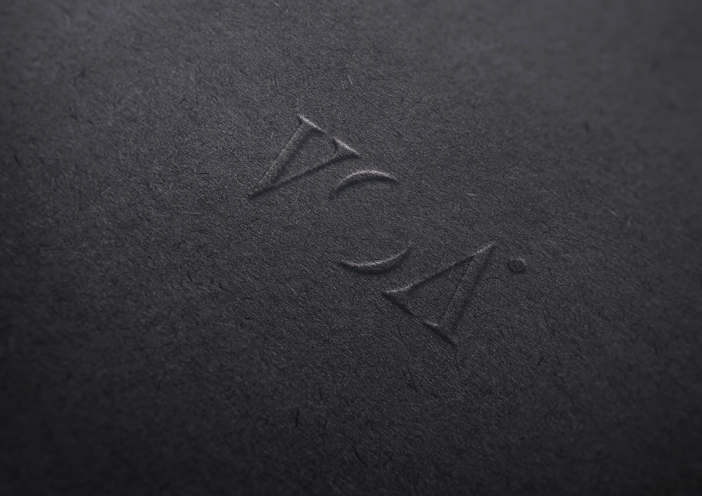
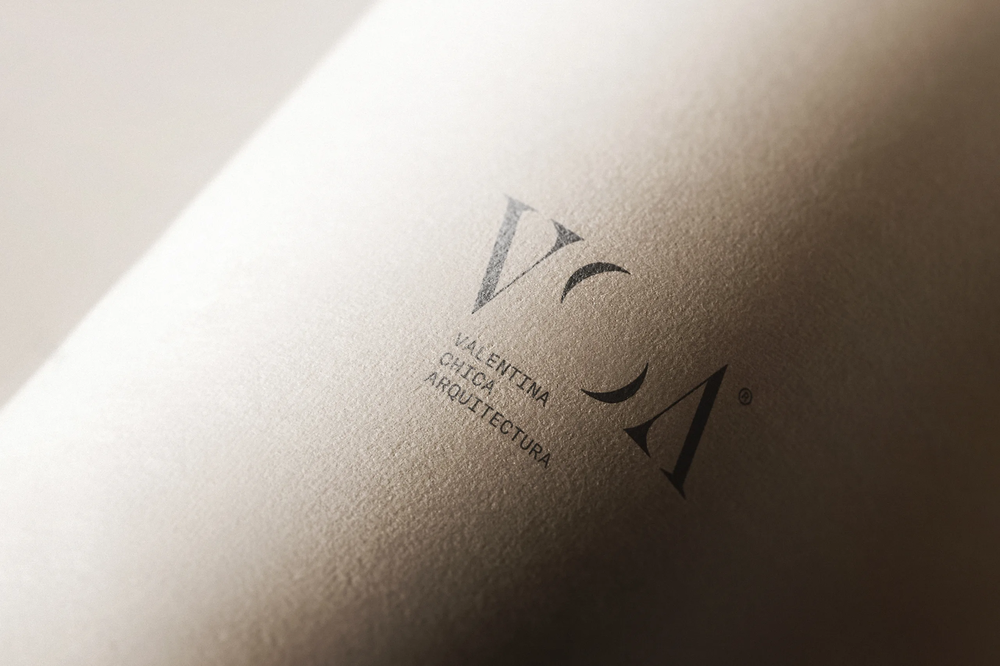
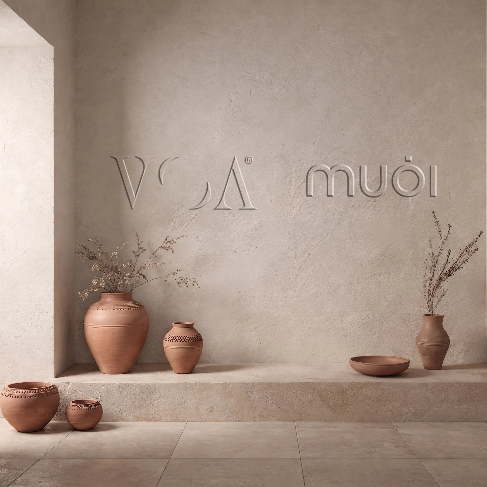

El relieve, alto o bajo, graba el logo sobre papel, tela o un muro de estuco hasta convertirlo en una marca que se percibe por el tacto y la sombra más que por la lectura. Por eso es la única aplicación donde puede usarse a gran escala y en el mismo tono del fondo: aquí funciona como textura del material.
VC Arquitectura®
Brand Guidelines
Recursos Gráficos
Formas Orgánicas

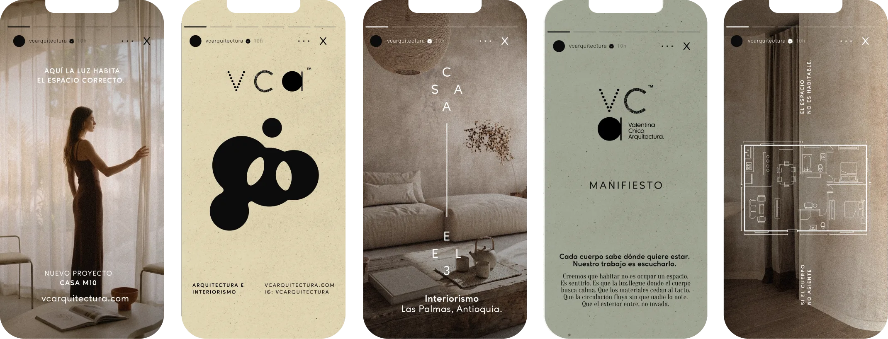
Círculos de distinto tamaño que se tocan y se superponen hasta formar una sola mancha. Cada círculo es un espacio y cada uno es distinto, como lo es la manera de habitar de cada persona.
Va siempre en Grafito, sola y con aire alrededor, en portadas, afiches e historias. Una forma por pieza.
Estas imágenes muestran cómo se ve la marca bien aplicada: el color, la tipografía, la diagramación. Están aquí solo para ilustrar ese criterio — no para usarse directamente en piezas de la marca.
VC Arquitectura®
Brand Guidelines
Key Visuals
VC Arquitectura®
Brand Guidelines
Key Visuals
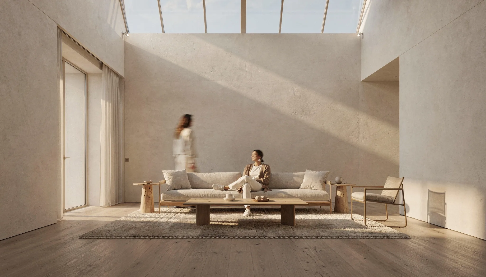

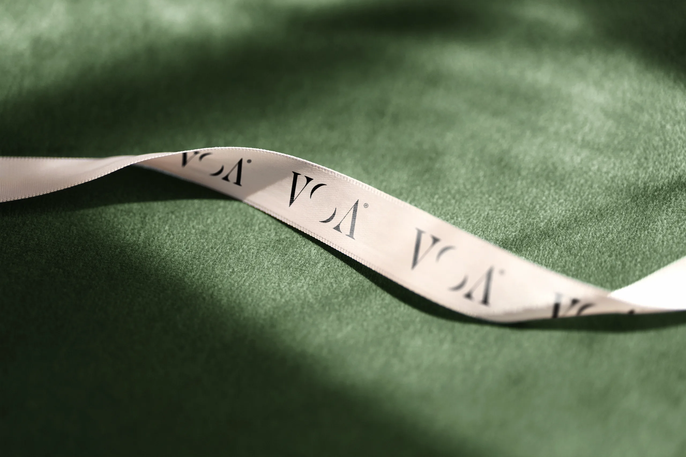
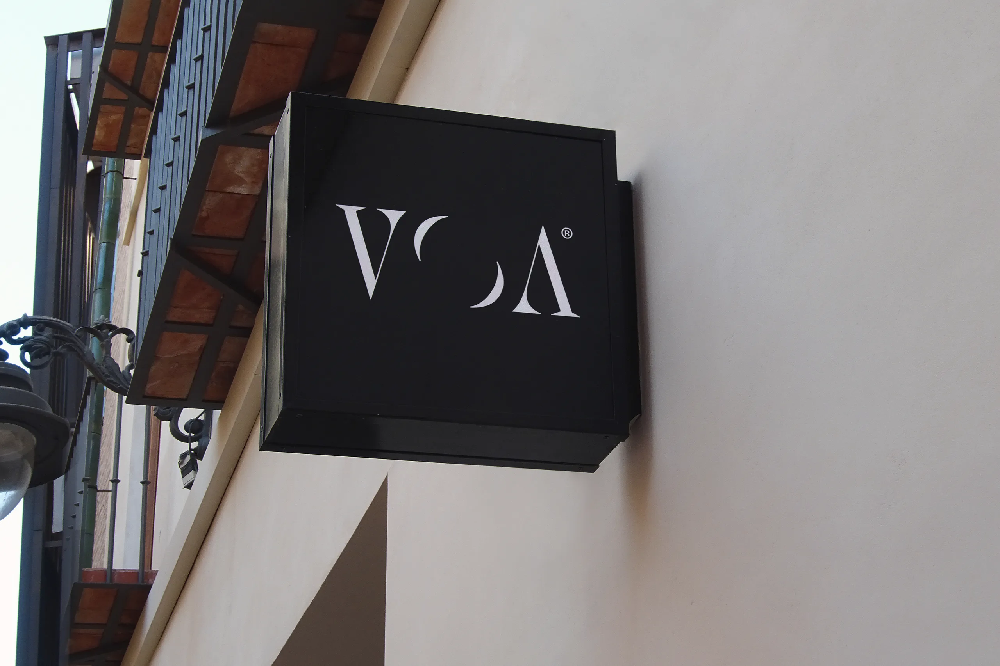
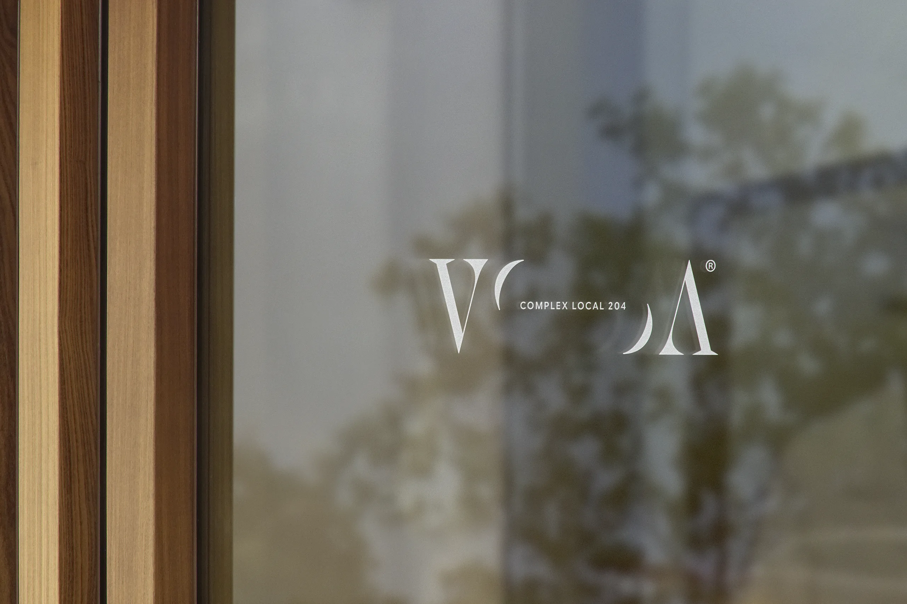
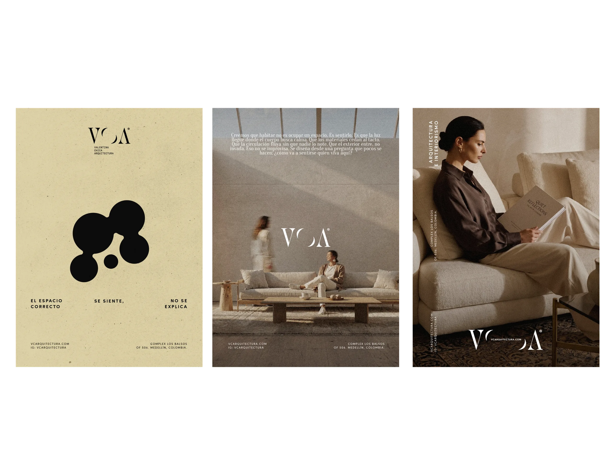
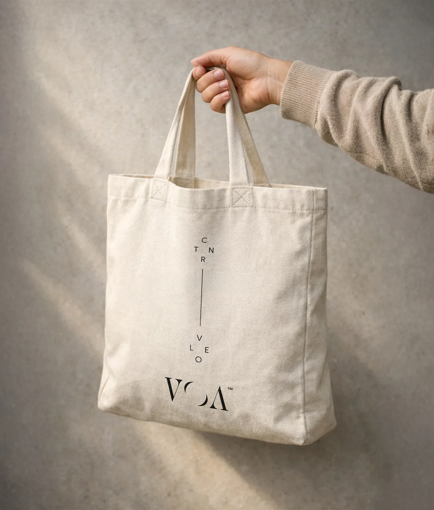

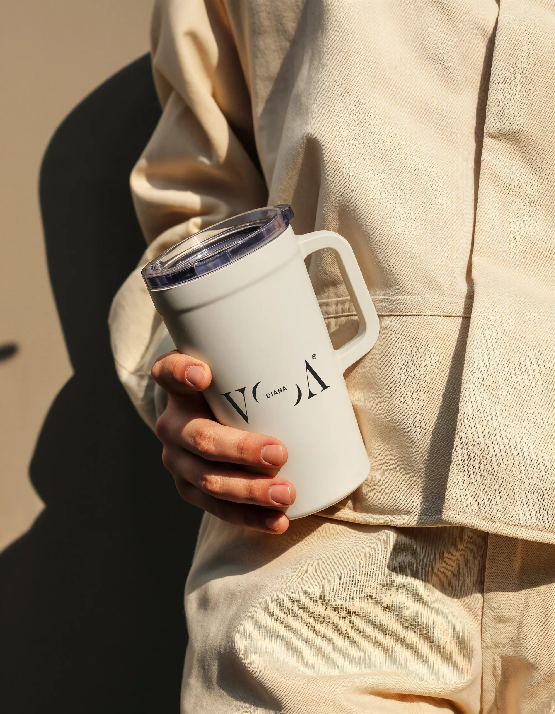
VC Arquitectura®
Brand Guidelines
Para descargar la versión PDF de este manual, haz clicK en el botón
VC Arquitectura®
Brand guidelines
By Omónimo Design House
(2026)©